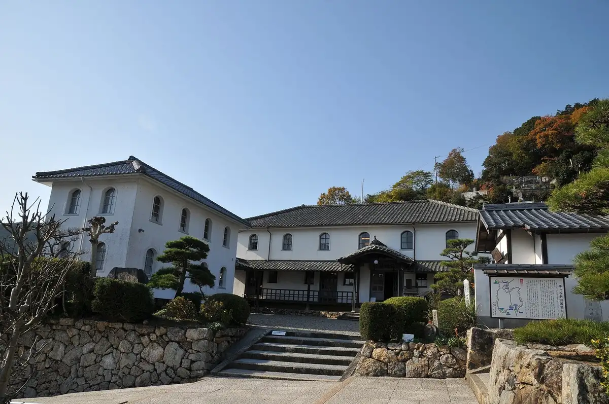

Japan / Ehime / Seiyo
Seiyo, Ehime
Seiyo · Ehime
Seiyo
Highlighted on the Ehime map.

Dining
DINING-KITCHEN Kura
Seiyo, Ehime · 0894-21-1772 · Official / source link
Mori no Sakana
Seiyo, Ehime · 0894-76-0106 · Official / source link
Tonkatsu Maru Shichi Ehime Mise
Seiyo, Ehime · 080-9980-7677 · Official / source link
Bar Ento
Seiyo, Ehime · 080-6503-2544 · Official / source link
Daikokuya
Seiyo, Ehime · 0894-33-0377 · Official / source link
Waraguro
Seiyo, Ehime · 0894-62-5172 · Official / source link
Niwasaki cafe Sora
Seiyo, Ehime · 0894-62-9537 · Official / source link
Ai Warai
Seiyo, Ehime · 0894-62-2011 · Official / source link
Akehama Re
Seiyo, Ehime · 0894-64-1616 · Official / source link
Hamonii Kirara
Seiyo, Ehime · 0894-62-2949 · Official / source link
Tsuchii Ie Kura
Seiyo, Ehime · 0894-76-0636 · Official / source link
Howaito Farm
Seiyo, Ehime · 0894-72-3351 · Official / source link
Hana Kashi Mise
Seiyo, Ehime · 0894-62-8812 · Official / source link
Yuboku Tami
Seiyo, Ehime · 0894-62-5877 · Official / source link
Furusato Sosei Kan
Seiyo, Ehime · 0894-64-1330 · Official / source link
Sharuru
Seiyo, Ehime · 090-4785-4099 · Official / source link